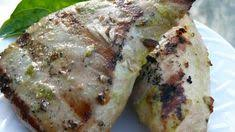

Home
Grilled Jalapeño Tune Steaks

Description
Very easy, but oh so good! This recipe will work with just about any kind of fish steak.
Ingredients:
- 8 (3 ounce) fillets fresh tuna steaks, 1 inch thick
- ½ cup soy sauce
- ⅓ cup sherry
- ¼ cup vegetable oil
- 1 tablespoon fresh lime juice
- 1 clove garlic, minced
Steps:
- Lightly season chicken breasts on both sides with salt and pepper.
- Heat a cast iron skillet over medium heat and pan-fry chicken until it is no longer pink in the center and the juices run clear, turning occasionally, about 10 minutes. An instant-read thermometer inserted into the center should read at least 165 degrees F (74 degrees C). Remove from skillet, allow to cool, and cut into bite-sized pieces.
- Meanwhile, pierce sweet potato with a fork a few times and microwave until fork-tender, 2 to 3 minutes. Be careful not to overcook. Remove and allow to cool; then cut into bite-sized pieces.
- Heat oil in a wok, Dutch oven, or heavy skillet over medium heat. Add kale, season with salt and pepper, and cook until wilted, 3 to 5 minutes. Add sweet potato, mini peppers, onion, zucchini, and garlic. Stir-fry for 3 to 5 minutes. Add chicken and peanut sauce. Stir all ingredients together until well combined. Cook and stir for 3 minutes.